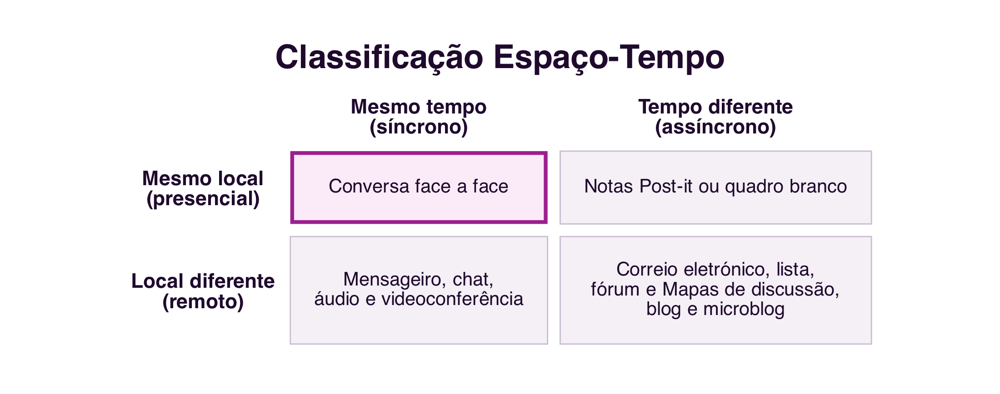
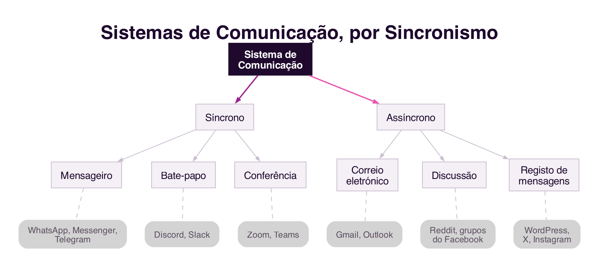

5 Sistemas de Comunicação para Colaboração
Sistemas de Comunicação para Colaboração
Introdução
O capítulo anterior identificou a comunicação como uma das três dimensões do Modelo 3C, a troca de mensagens através da qual os participantes negoceiam e assumem compromissos sobre o trabalho a realizar (Secção 4.4). Este capítulo aprofunda essa dimensão: que características distinguem a comunicação mediada por computador da comunicação presencial, como classificar os diferentes sistemas de comunicação, e como a linguagem que usamos para comunicar pode, ela própria, ser uma forma de agir. Fecha com um olhar breve sobre os sistemas que apoiam as outras duas dimensões do Modelo 3C, a coordenação e a cooperação, para completar o quadro.
5.1 Comunicação Mediada por Computador
O computador tornou-se, sobretudo depois da interligação em rede, um meio de comunicação humana. O século XX foi marcado pelos meios de comunicação de massa, como a imprensa, a rádio e a televisão, caracterizados pela difusão de informação a partir de uma central editorial de grande porte, sem possibilidade de interação com a audiência. O século XXI é marcado pelas mídias sociais, caracterizadas pela produção de conteúdo pelos próprios utilizadores e pela conversação entre multidões, tal como discutido nos capítulos anteriores a propósito das redes sociais (Pimentel, Gerosa, e Fuks 2011).
A Comunicação Mediada por Computador (CMC) trouxe possibilidades novas para a interação social: assincronicidade, ausência de interação face a face, anonimato, privacidade, contacto contínuo com interlocutores, comunidades virtuais, e conversação entre multidões que nunca se encontram presencialmente. É também objeto de investigação em CMC a diferença entre a interação online e offline, e a cultura própria dos novos meios de comunicação (Pimentel, Gerosa, e Fuks 2011).
5.1.1 O dialeto da internet
Um dos fenómenos mais estudados em CMC é a tentativa de textualizar a informalidade da conversa presencial, um processo a que se chama reoralização da linguagem escrita (Pimentel, Gerosa, e Fuks 2011). A ausência do olhar, do tom de voz e da linguagem corporal é parcialmente compensada por um conjunto de recursos linguísticos próprios da comunicação escrita mediada por computador: emoticons e emojis, abreviações (vc, pfv), onomatopeias (kkkk, hahaha), alongamentos vocálicos (aaah), pontuação exagerada (!!!), maiúsculas para GRITAR, e a grafia fonética de palavras (aki em vez de “aqui”, tb pq em vez de “Também porque” e muitas outras ). GIFs e figurinhas de reação cumprem hoje uma função semelhante, substituindo por imagem aquilo que a expressão facial faria numa conversa presencial.
Este dialeto não é um desvio a corrigir, mas uma adaptação funcional ao meio: representa uma tentativa de recuperar, através do texto, pistas que a conversa presencial oferece gratuitamente. Conhecê-lo é necessário para comunicar adequadamente através dos diferentes sistemas computacionais de comunicação (Pimentel, Gerosa, e Fuks 2011).
5.2 Síncrono e Assíncrono
Uma das formas mais tradicionais de classificar vv um sistema de comunicação cruza duas dimensões independentes: o tempo, que distingue comunicação síncrona (os interlocutores estão presentes ao mesmo tempo no meio de comunicação e a mensagem é recebida de imediato), de comunicação assíncrona (a mensagem é armazenada e pode ser recuperada mais tarde); e o local, que distingue interlocutores colocados no mesmo espaço físico de interlocutores em locais remotos (Ellis, Gibbs, e Rein 1991) (Figura 5.1).

A conversa presencial é síncrona, com as pessoas partilhando em simultâneo o mesmo local onde se desenrola a comunicação; um post-it deixado na secretária de alguém é assíncrono mas presencial - as pessoas atuam fisicamente no local da mensagem, mas não no mesmo tempo. A generalidade dos sistemas de comunicação para colaboração, porém, situa-se na coluna remota: o mensageiro instantâneo, o chat e a videoconferência são síncronos e remotos, enquanto o correio eletrónico, os sistemas de discussão, o blog e o microblog são assíncronos e remotos.
Esta distinção tem uma implicação técnica muitas vezes invisível para quem usa estes sistemas: a comunicação síncrona remota depende, momento a momento, da qualidade da ligação à rede entre os interlocutores. Se a rede for lenta ou perder informação, mesmo que por um instante, a videochamada congela, o áudio corta ou a mensagem chega fora de tempo, porque não há margem para reenviar ou esperar sem quebrar a experiência de tempo real. A comunicação assíncrona tolera muito melhor uma rede instável, precisamente porque a mensagem pode ser armazenada e entregue mais tarde sem que isso comprometa a comunicação: um correio eletrónico que demore mais alguns segundos a chegar não altera em nada a experiência de quem o lê. Este compromisso entre imediatismo e fiabilidade acompanha, ainda hoje, a escolha entre sistemas síncronos e assíncronos para uma dada tarefa colaborativa.
5.3 Atos de Fala e a Conversação para Ação
A teoria dos Atos de Fala (speech acts) mostra que a linguagem, além de servir para descrever o mundo, também serve para realizar ações. Um enunciado pode ser constatativo, uma afirmação, descrição ou relato, ou performativo, uma frase que realiza uma ação com consequências no momento em que é enunciada: ao dizer “declaro a sessão aberta”, o objetivo não é informar, mas sim, precisamente, abrir a sessão. Esta teoria foi fundamentada nas conferências de John L. Austin em Harvard, em 1955, publicadas postumamente em 1962 no livro How to Do Things with Words (Austin 1962).
Na área dos sistemas colaborativos, um dos estudos mais conhecidos sobre comunicação é a conversação para ação: os interlocutores trocam mensagens para negociar e assumir compromissos sobre um trabalho a realizar. Terry Winograd modelou este processo como uma sequência de estados, em que cada transição de estado ocorre através de um ato de fala (Winograd 1987) (Figura 5.2).

O processo inicia-se quando um interlocutor solicita uma tarefa a outro. O segundo interlocutor pode prometer realizá-la, dando início a um período de execução que termina quando o primeiro interlocutor afirma estar satisfeito com o resultado e declara o processo concluído. Em qualquer etapa, porém, o segundo interlocutor pode rejeitar a solicitação, terminando o processo por um caminho diferente. Este modelo mostra que, mesmo numa troca de mensagens aparentemente simples, existe uma estrutura de negociação subjacente, composta por atos de fala sucessivos que vão comprometendo os interlocutores com o trabalho a realizar.
5.4 Flaming, Trollagem e a Ausência de Pistas Sociais
A investigação em CMC estuda também fenómenos negativos associados aos novos meios de comunicação, como o flaming (mensagens agressivas e discussões acaloradas) e a trollagem, a provocação deliberada de outros interlocutores com o objetivo de gerar reações emocionais ou perturbar uma conversa. Ambos os fenómenos são atribuídos principalmente ao anonimato e à comunicação baseada apenas em texto, com ausência do olho no olho e da linguagem não verbal que, numa conversa presencial, moderam naturalmente o tom da interação (Pimentel, Gerosa, e Fuks 2011).
Estes fenómenos distinguem-se do cyberbullying, já discutido no Cap.1 (Secção 1.5.3): o cyberbullying é um padrão sustentado de assédio dirigido a uma vítima específica, com o objetivo de a magoar repetidamente, enquanto o flaming e a trollagem podem ocorrer de forma pontual, numa única troca de mensagens, sem que exista necessariamente um alvo fixo ou a intenção de causar dano continuado. As mesmas condições do meio, o anonimato e a ausência de pistas não verbais, explicam a origem de ambos os fenómenos, mas a sua gravidade e persistência são muito diferentes.
Devido ao facto de os utilizadores das plataformas de comunicação atuais não necessitarem de comprovar a sua entidade, é facilitada a expressão de opiniões e ideias, o que também pode levar a comportamentos agressivos ou provocatórios, como o flaming e a trollagem. As plataformas em uso, maioritariamente norte-americanas e chinesas, não têm mecanismos eficazes de identificação de identidade o que em muitos casos impossibilita a responsabilização dos agressores.
Na Europa, a legislação atual obriga as plataformas a identificar os seus utilizadores, o que reduz estes fenómenos. Por exemplo, em alternativa a um sistema como o X, está em fase final de lançamento a plataforma social W social (https://wsocial.news), que permite a comunicação anónima, mas com a identificação dos utilizadores verificada obrigatóriamente com base em documentos de identidade formais (cartão de cidadão ou passaporte), que pode intervir em caso de abuso.
5.5 Breve Evolução dos Sistemas de Comunicação
Os sistemas de comunicação para colaboração organizam-se em famílias, consoante o género de conversação que estabelecem entre os interlocutores: correio eletrónico, sistemas de discussão (lista, fórum), mensageiro instantâneo, chat, áudio e videoconferência, registo de mensagens (blog, microblog) (Pimentel, Gerosa, e Fuks 2011). Cada família partilha características e evolui de forma influenciada pelas famílias anteriores, tal como uma espécie é influenciada pelas espécies de que descende (Figura 5.3).

O correio eletrónico, entre os primeiros sistemas de comunicação da internet, continua hoje central (Gmail, Outlook), embora tenha incorporado características de outros sistemas, como o chat. Os sistemas de discussão evoluíram das listas de correio para os grupos e comunidades das redes sociais atuais, como os grupos do Facebook ou o Reddit. O mensageiro instantâneo, que já existia antes da própria internet como a conhecemos hoje, tem em aplicações como WhatsApp, Messenger e Telegram os seus representantes mais populares. O chat em grupo, historicamente associado ao IRC, sobrevive hoje em plataformas como o Discord e o Slack. E o blog, o “diário de bordo” pessoal dos anos 1990, deu origem ao microblog, hoje dominado por plataformas como o X e o Instagram.
Independentemente do sistema concreto, a análise comparativa mantém-se válida: o sincronismo da comunicação, a quantidade de interlocutores envolvidos, a linguagem usada, o tamanho das mensagens e a estruturação do discurso continuam a determinar as características de qualquer novo sistema de comunicação que venha a surgir.
5.6 Sistemas de Coordenação e de Cooperação
O Modelo 3C, apresentado no capítulo anterior, decompõe a colaboração em três dimensões: comunicação, coordenação e cooperação (Secção 4.4). Este capítulo debruçou-se sobre a primeira; faz-se agora uma breve referência aos sistemas que apoiam as outras duas.
5.6.1 Sistemas de Coordenação
A coordenação é o planeamento do trabalho em grupo (Santoro, Iendrike, e Araujo 2011). Uma das formas mais comuns de apoiar a coordenação é através de processos de negócio: um conjunto definido de passos para realizar um trabalho, com objetivos, atividades, responsáveis e regras que estabelecem a ordem de execução. Os sistemas de gestão de processos de negócio, ou BPMS (Business Process Management System), são sistemas colaborativos que apoiam a definição, a execução e o acompanhamento destes processos, coordenando os diferentes participantes envolvidos e mantendo um registo do estado de cada atividade (Santoro, Iendrike, e Araujo 2011).
5.6.2 Sistemas de Cooperação
A cooperação exige que os participantes tenham percepção (awareness) do que os outros estão a fazer no espaço de trabalho partilhado, um estado mental de compreensão das ações e da presença dos outros (Santos, Tedesco, e Salgado 2011; Dourish e Bellotti 1992). Numa interação presencial, esta perceção surge naturalmente, através da visão e da audição; num sistema colaborativo, tem de ser explicitamente comunicada, tipicamente através de notificações estruturadas em torno de seis questões: quem, o quê, onde, quando, como e porquê.
A percepção reduz o isolamento e evita duplicação de trabalho e conflitos, mas tem de ser desenhada com cuidado: em excesso, gera sobrecarga de informação e é intrusiva. Um exemplo conhecido desta tensão é o do assistente Clippy do Microsoft Office, rejeitado pelos utilizadores por interromper constantemente o seu trabalho com sugestões não solicitadas, substituído mais tarde por sugestões discretas, ativadas apenas quando o próprio utilizador as procura (Santos, Tedesco, e Salgado 2011).
5.7 Síntese
Este capítulo caracterizou os sistemas de comunicação que suportam a colaboração:
- A Comunicação Mediada por Computador trouxe assincronicidade, anonimato e comunidades virtuais, e deu origem a um dialeto próprio, a reoralização da linguagem escrita (Pimentel, Gerosa, e Fuks 2011)
- A classificação espaço-tempo cruza sincronismo (síncrono ou assíncrono) com localização (colocado ou remoto); a comunicação síncrona depende, de forma mais crítica, da qualidade da rede (Ellis, Gibbs, e Rein 1991)
- A teoria dos Atos de Fala mostra que a linguagem também realiza ações (Austin 1962); o modelo da conversação para ação, de Winograd, descreve a negociação de um trabalho como uma sequência de atos de fala (Winograd 1987)
- O flaming e a trollagem resultam do anonimato e da ausência de pistas não verbais na comunicação por texto, distintos do cyberbullying (Secção 1.5.3) pela ausência de um padrão sustentado dirigido a uma vítima
- Os sistemas de comunicação organizam-se em famílias (correio eletrónico, discussão, mensageiro, chat, conferência, registo de mensagens), cada uma evoluindo de forma influenciada pelas anteriores (Pimentel, Gerosa, e Fuks 2011)
- As outras duas dimensões do Modelo 3C também têm sistemas próprios: a coordenação apoia-se em processos de negócio e sistemas BPMS (Santoro, Iendrike, e Araujo 2011); a cooperação exige percepção do que os outros participantes fazem no espaço partilhado, desenhada com cuidado para não se tornar intrusiva (Santos, Tedesco, e Salgado 2011)
5.8 Para Refletir
Pensa numa conversa recente por mensageiro instantâneo: consegues identificar exemplos do “dialeto da internet” que usaste, emoticons, abreviações, maiúsculas para dar ênfase? O que estarias a comunicar de forma diferente se essa mesma conversa fosse por correio eletrónico, ou presencialmente?
E quanto à conversação para ação: da próxima vez que pedires algo a alguém por mensagem, repara nos atos de fala que usam, sem se aperceberem, para negociar o compromisso, o pedido, a promessa, a confirmação.
Toma como exemplo o Whatsapp: identifica as componentes do modelo 3C na forma como os grupos de conversa funcionam, e como a plataforma suporta cada uma delas. Pensa também nos mecanismos de percepção que a plataforma oferece, e como eles ajudam a coordenar o trabalho em grupo.